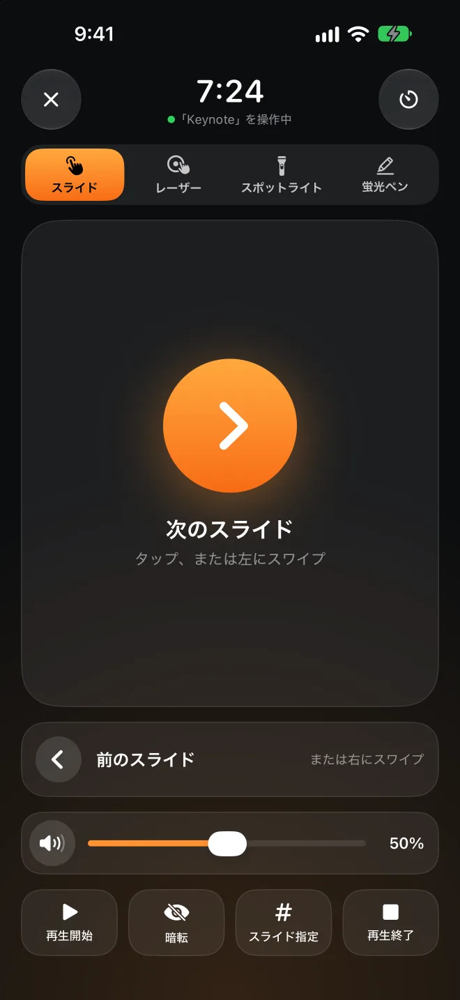

離れるとロック。戻ると解除。
PresenceはMacのメニューバーで動くAppです。iPhoneやApple Watchがふだんから発しているBluetooth信号を受信し、信号が弱くなると画面をロック。席に戻ると、ロックを解除します。iPhoneやApple Watchには何もインストールする必要はありません。
Mac版は無料のオープンソースです。macOS 26以降が必要です。
ロック解除 ここまで離れると
ロック
Apple Watchが近くにあります−52 dBm
あなたを右へドラッグして、Macがいつロックされるか見てみてください。そのあと、また戻ってみましょう。
誤ってロックするより、少し遅れて解除するほうがいい。
Bluetoothの信号は揺れ動き、体の向きを変えるだけでも大きく変わります。Presenceはいくつかの慎重なルールで判断するので、座っているのにロックされることはなく、ほかの人があなたのMacを使えるようになることもありません。
1回の値ではなく、数秒間の傾向を見る
直近4秒の中央値を使い、少なくとも3回分の測定値が必要です。一瞬だけ強くなったり弱くなったりしても、数に入れません。
ロック用と解除用、2本のライン
ロックのしきい値はロック解除のしきい値より低くしてあるので、その間に立っていてもロックと解除を繰り返すことはありません。キャリブレーションはデバイスごとにでき、ロック解除したい位置とロックしたい位置に8秒ずつ立つだけです。
まだ操作中なら、待つ
信号が弱くなっても、キーボードやマウスがまだ使われていれば、ロックを保留します。
ロック解除の前にiPhoneに確認
Presence Remoteを使っている場合、Macはパスワードを入力する前に、ペアリング時に交換した鍵で応答するようiPhoneに求めます。Bluetooth信号を偽装するだけでは、Macのロックは解除できません。
まずはApple Watchで
ロックを解除する前に数秒待ち、macOSがApple Watchでロックを解除できるようにします。それでもMacがロックされたままのときだけPresenceがパスワードを入力し、数文字ごとにログイン画面のままであることを確認します。
ロックすべきときはロック。そうでないときは邪魔をしない。
これらはすべてMac版に入っていて、無料です。
プレゼン中はロックしない
KeynoteやPowerPointでスライドショーを再生しているあいだは、自動ロックを一時停止します。前に出て話していても、プロジェクタに突然ログイン画面が映ることはありません。
自宅ではゆるめに
信頼するネットワークに接続しているとき、電源に接続しているとき、設定した時間帯以外は、自動ロックしないようにできます。ネットワークはルーターで識別するので、位置情報の許可は必要ありません。
しばらく一時停止
Macを人に貸すときや会議に出るときは、15分から4時間まで一時停止できます。終わったときにあなたが近くにいなければ、すぐにロックします。
不在中にロック解除されたら、わかる
あなたが近くにいないときに誰かが手動でMacのロックを解除すると、履歴に記録されます。写真を撮ってiPhoneに通知することもできます。
今日はどれだけ座っていたか
在席時間で今日と直近7日間を記録し、座りすぎたときは立ち上がるようお知らせします。
BLEUnlockから乗り換える
PresenceはBLEUnlockのアイデアをもとに、最新のmacOS向けに書き直したAppです。デバイスとしきい値はワンクリックで読み込めます。



ステージでは、iPhoneがリモコンに。
リモコンを買い足す必要も、レシーバーを挿す必要もありません。iPhoneの上で指を動かすと、大きなスクリーンの同じ位置に赤い点やスポットライト、蛍光ペンの線が表示されます。下のiPhoneで試してみてください。
レーザー、スポットライト、蛍光ペンのどれかを選んで、iPhoneの操作エリアを押したまま指を動かしてください。蛍光ペンの線は数秒後に消え、スライドをめくるとすぐに消えます。
タップやスワイプでスライドをめくる
スライドへの移動や暗転、スライドショーの開始と終了もできます。
ロック画面からも操作できる
ロック画面とDynamic Islandにスライド操作ボタンが表示されるので、ロックを解除する必要はありません。
Apple Watchもリモコンに
タップ、Digital Crownを回す、ダブルタップでスライドをめくれます。左にスワイプすると、Macの音量を調整できます。
発表タイマー
持ち時間を設定しておくと、残り5分のときと終了時に、手首を軽くタップしてお知らせします。
Macの音量
スライド内の動画の音が大きすぎたり小さすぎたりしても、Macまで戻らずに調整できます。大きなスクリーンに音量の表示が出ることもありません。
どのプレゼンAppでも
Keynote、PowerPoint、Google スライド、PDFに対応。赤い点やスポットライトは画面のいちばん上に描かれるだけなので、何かをクリックしてしまうことはありません。
ロックは無料。リモコンはPro。
Mac版と、iPhone・Apple Watch用のPresence Remoteは無料です。Presence Proが必要なのは、プレゼンリモコンだけです。
Presence Remote
MacのPresenceと組み合わせて使う、iPhoneとApple Watch用のAppです。
- iPhone、Apple Watch、コントロールセンターからロック
- 自動ロックの一時停止と再開
- Macがロックされたときや、誰かがロックを解除したときに通知
- ロック解除前の暗号化確認
Presence Pro
プレゼンリモコン：スライド、レーザー、スポットライト、蛍光ペン、音量、発表タイマー。iPhoneでもApple Watchでも使えます。
サブスクリプションはどちらも7日間の無料トライアル付きです。3つともファミリー共有に対応しています。
AppでアップグレードMacが従うのは、あなたのiPhoneだけ。
アカウントもサーバーもなし
MacとiPhoneはBluetoothで直接通信し、インターネットは経由しません。開発者には何も送られません。
すべてのコマンドを暗号化
ペアリングすると、あなたのデバイスだけが共有する鍵が作られます。コマンドも状態もすべてこの鍵で暗号化・検証されるので、ほかの人のiPhoneからコマンドを送ることはできません。
パスワードはキーチェーンの中に
ロック解除に使うログインパスワードは、Macのキーチェーンに保存されます。保存するのは、Presenceがパスワードが正しいことを確認してからです。
オープンソース
Mac版はすべてオープンソースです。どう判断し、どうロックを解除しているのか、ご自身で確かめられます。
よくある質問
iPhoneにAppをインストールする必要はありますか？
いいえ。PresenceはiPhoneやApple Watchがもともと発しているBluetooth信号を受信するので、Mac版だけでロックとロック解除ができます。Presence Remoteを使うと、離れた場所からのロック、通知、ロック解除前の暗号化確認も使えるようになります。Presence Proでは、さらにプレゼンリモコンが加わります。
必要なものは何ですか？
Bluetooth LEを搭載し、macOS 26以降を実行しているMacが必要です。Presence RemoteにはiOS 26またはwatchOS 26以降が必要です。Apple Watchだけで使うことも、定期的に信号を発信していてアドレスが固定されている、ほかのBluetoothデバイスを使うこともできます。
「Apple Watchでロック解除」とはどう違いますか？
macOS標準の機能はロック解除だけで、離れたときにロックはしません。Presenceは両方を行います。ロック解除のときはまず数秒待って、Apple WatchがMacのロックを解除できるようにし、解除されなかったときだけパスワードを入力します。2つは一緒に使えます。
じっと座っているのにロックされることはありますか？
ロックされるのは、信号が数秒間弱いままだったときだけです。また、ロックのしきい値はロック解除のしきい値より低くしてあります。キーボードやマウスを操作しているあいだは、ロックを保留します。それでも敏感すぎる場合は、「デバイス」ページでキャリブレーションし直してください。
Mac版がMac App Storeにないのはなぜですか？
自動でロックを解除するにはログインパスワードを入力する必要がありますが、Mac App StoreのAppにはそれが許可されていません。そのためMac版は、Appleの公証を受けたうえでGitHubから配布し、アップデートも自動で行います。
どのプレゼンAppで使えますか？
スライドをめくる操作は矢印キーとして送られるので、Keynote、PowerPoint、Google スライド、PDFビューアで使えます。レーザー、スポットライト、蛍光ペンはPresenceが画面のいちばん上に描くので、何が表示されていても使えます。先にMacのPresenceで「iPhoneとWatch › プレゼンリモコンを許可」をオンにしてください。
バッテリーを消耗しますか？
iPhoneとApple Watchは、もともとこの信号を発信しています。PresenceはMacでそれを受信しているだけで、CPU使用率はふだん1%未満です。